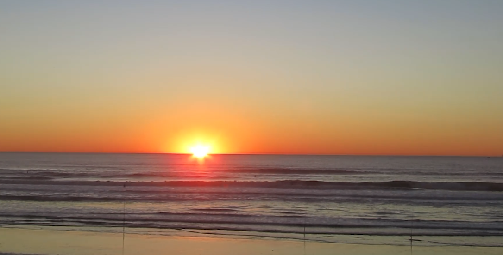
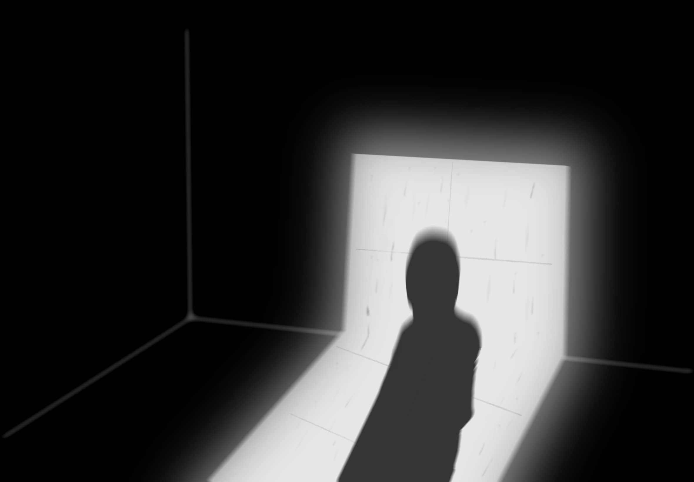
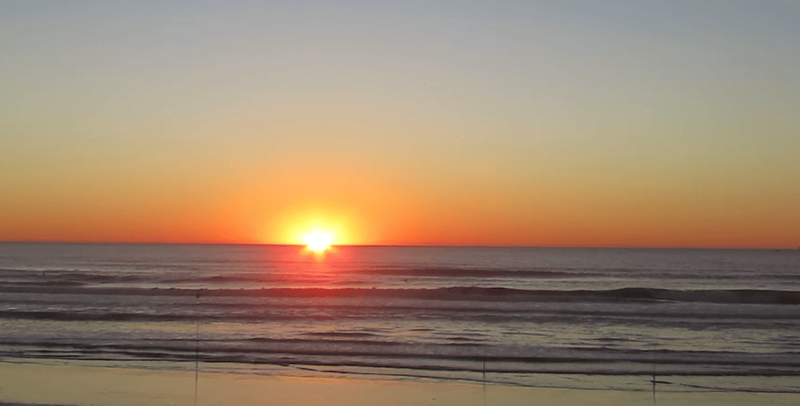
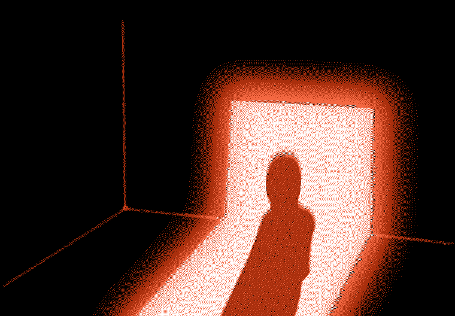
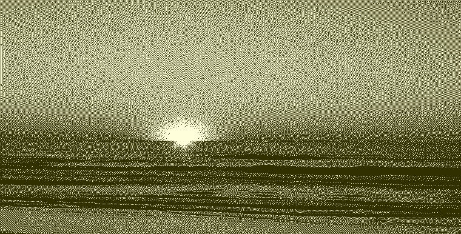

This is the graphic that I done with Procreate.
This photo that I take for my previous project about time loop of San Francisco view.
This photo use the compressor.io tool to resize.
Same with this one using compressor.io to resize.
This photo is the resizing from compressor.io, then put into ditherit.com for rescale and palette with Red.
This photo using compressor.io, drop it into ditherit.com for rescale and palette with Yellow Monochrome.